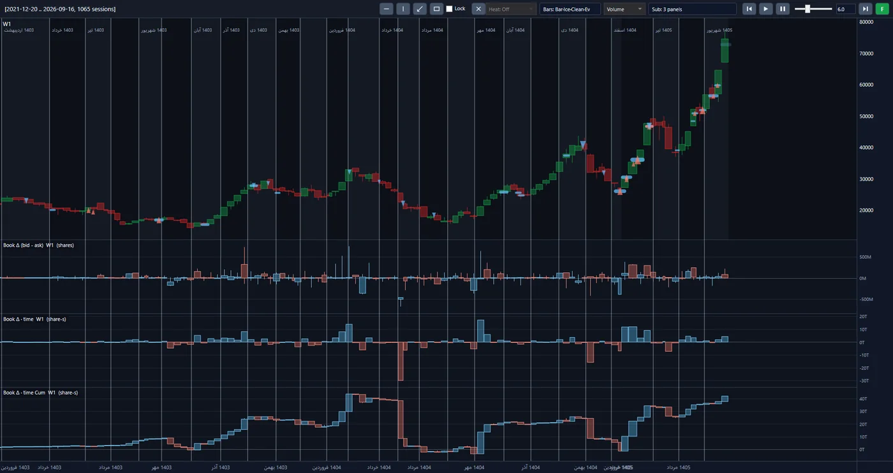
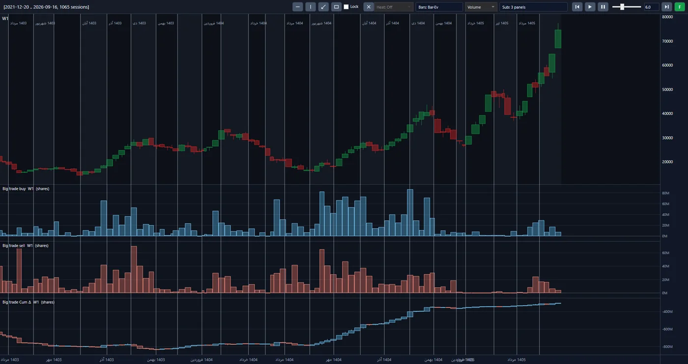
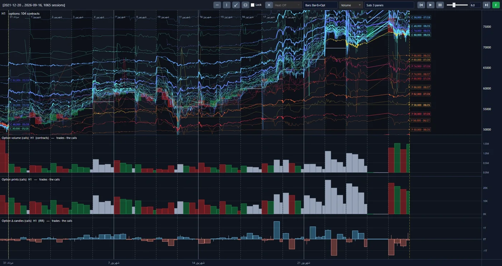

Einführung
Der Preis ist die letzte Nachricht, die den Markt erreicht. Davor hat jemand entschieden, eine Order platziert, eine Order zurückgezogen, Geld bewegt. An der Teheraner Börse geschieht das Millionen Mal am Tag, und fast alle lesen nur die letzte Zeile.
Wir haben beschlossen, die ganze Geschichte zu lesen. Das Projekt TSETMC hat elf Jahre des iranischen Kapitalmarkts – Trade für Trade, Order für Order – für 1.148 Symbole zusammengetragen und nachgebildet. Auf dieser Historie entwickeln und testen wir unsere Modelle. Das Ziel ist ein algorithmischer Vermögensverwaltungsfonds: Kapital, das nicht nach Bauchgefühl oder Hörensagen gesteuert wird, sondern durch das Lesen des Live-Orderflows.
Eine Strategie ist aus dieser Infrastruktur zu einem eigenen Projekt herangewachsen: Gold ETF Arbitrage.
Einblick in die Plattform
Das sind echte Bildschirmaufnahmen aus der Analyseplattform des Projekts, keine Mock-ups. Jede Ansicht zeigt dieselben Marktrohdaten aus einem anderen Blickwinkel. Klicken Sie auf das Bild, um es zu vergrößern.



Der wöchentliche Preis, und darunter die Differenz zwischen dem Volumen auf der Geldseite und dem auf der Briefseite des Orderbuchs in drei Formen: roh, zeitgewichtet und kumulativ.
Das Volumen der großen Käufe und der großen Verkäufe in jeder Woche und die kumulative Differenz zwischen beiden, unter demselben Preischart.
104 Optionskontrakte auf einem Chart, mit Volumen, Anzahl der Trades und Delta-Kerzen der Calls.
Ansatz
Wir betrachten den Markt nicht von oben; wir beginnen an seinem Boden und bauen nach oben. Eine Anlageentscheidung entsteht in drei Stufen, und jede steht auf den Schultern der vorherigen.
-
Vom Orderflow zur Aktie
Wir lesen die feinsten Daten, die der Markt erzeugt, um zu sehen, was hinter der Bewegung jeder Aktie steht: Geld, das gekommen ist, um zu bleiben, oder eine Welle, die durchzieht. Das Ergebnis dieser Stufe ist eine klare numerische Einschätzung des Zustands jeder Aktie.
-
Von der Aktie zum Sektor
Werden die Aktien eines Sektors zusammen gelesen, zeigt sich ein größeres Bild: welchem Sektor sich das Geld zugewandt und von welchem es sich abgewandt hat.
-
Vom Sektor zum Portfolio
Die Sektorgewichte und die gewählten Aktien innerhalb jedes Sektors bilden das Portfolio. Jede Einheit darin hat einen Grund, und dieser Grund lässt sich bis zum Boden des Marktes zurückverfolgen.
Neben diesen drei Stufen steht der Optionsmarkt. Er ist im Iran jung, und die meisten Marktteilnehmer gehen noch an ihm vorbei. Wir nehmen ihn schon heute ernst und haben es möglich gemacht, ihn zusammen mit dem Preis der zugrunde liegenden Aktie zu analysieren.
Was heraussticht
-
Eine Entscheidung, die weder Angst noch Gier kennt.
Der iranische Markt wird von Emotionen getrieben: Eine Warteschlange von Käufern macht alle gierig, eine Warteschlange von Verkäufern vertreibt alle. Die meisten Verluste entstehen in genau diesen beiden Momenten. Der Algorithmus ist an beiden Tagen gleich ruhig, und jeder Trade folgt aus einer Regel, die vorab geschrieben und getestet wurde – nicht aus der Stimmung des Tages.
-
Elf Jahre Tests, vor Ihrem Geld.
Keine Regel erreicht Kapital, wenn sie nicht gegen elf Jahre realen Marktes bestanden hat: den großen Boom von 2020, den Absturz danach und die langen, zähen Jahre der Stagnation. Wir machen unsere Fehler an der Historie, nicht an Ihrem Kapital.
-
Eine Rendite, die Sie entnehmen könnten, nicht eine, die sich nur vorzeigen lässt.
Ein gewöhnlicher Backtest nimmt an, dass jede Order sofort zum angezeigten Preis ausgeführt wird. Der reale Markt ist nicht so freundlich. Unser Simulator bildet die Orderausführungs-Engine der Börse selbst nach: Orders reihen sich in die Warteschlange ein, warten, bis sie an der Reihe sind, werden teilweise ausgeführt oder bleiben am Ende der Warteschlange. Die Zahlen, die wir berichten, sind durch diesen Simulator gegangen.
-
Wir kennen die Warteschlange – beim Einstieg und beim Ausstieg.
Der Albtraum des Anlegers in diesem Markt ist, hinter einer Verkaufswarteschlange festzustecken: ein Asset, das auf dem Papier existiert und sich nicht verkaufen lässt. Warteschlangen, Preislimits und die wahre Markttiefe sind von der ersten Zeile an in unserem Modell. Importierte Werkzeuge sind für alle drei blind.
-
Ein Portfolio, das auf keiner einzelnen Aktie, keinem einzelnen Sektor und keiner einzelnen Person ruht.
Der gesamte Markt – Aktien, Fonds und Optionen gleichermaßen – wird jeden Tag an einem Rahmenwerk gemessen, und das Portfolio wird aus allen Sektoren zusammengestellt. Das Wissen liegt im System, nicht im Kopf eines Staranalysten, der morgen vielleicht nicht mehr da ist.
-
Nur offizielle Marktdaten – und ein Grund für jede Entscheidung.
Keine Gerüchte, keine Nachrichten hinter den Kulissen, keine Kanäle und Signale. Die Eingabe des Algorithmus ist das, was die Börse selbst aufgezeichnet hat. Und für jeden Trade können wir sagen, warum er zustande kam, und ihn bis zu den Rohdaten zurückverfolgen.
Der weitere Weg
-
Erledigt
Die Dateninfrastruktur, die Analyse-Engine und der Ausführungssimulator sind gebaut und getestet. Diese Infrastruktur lässt sich nicht kaufen; sie braucht Jahre, und wir haben diese Jahre investiert.
-
Erledigt
Die erste Stufe: Die Orderflow-Indikatoren für jede Aktie sind gebaut und gemessen.
-
Aktuell
Die Sektorstufe, die Portfoliokonstruktion und ein mehrjähriger Backtest über den gesamten Markt.
-
Letzter Schritt
Anbindung an Live-Daten und algorithmische Steuerung von Kapital, in Fondsform.
Technologie
Der Verarbeitungskern ist in Python geschrieben, die Berechnungs-Engine und der Ausführungssimulator dagegen in C#. Die Verarbeitung läuft parallel: Die vollständige Historie eines stark gehandelten Symbols ist in unter neunzig Sekunden bereit. Keine Änderung wird angenommen, ohne die automatisierte Testsuite zu bestehen.